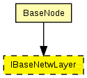
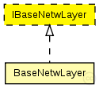

This documentation is released under the Creative Commons license
This documentation is released under the Creative Commons licenseInterface for network layer modules
The following diagram shows usage relationships between types. Unresolved types are missing from the diagram. Click here to see the full picture.
The following diagram shows inheritance relationships for this type. Unresolved types are missing from the diagram. Click here to see the full picture.
If a module type shows up more than once, that means it has been defined in more than one NED file.
| BaseNode (compound module) | (no description) |
| Name | Type | Default value | Description |
|---|---|---|---|
| debug | bool |
debug switch |
|
| stats | bool |
stats switch |
|
| headerLength | double |
length of the network packet header (in bits) |
// Interface for network layer modules moduleinterface IBaseNetwLayer { parameters: bool debug; // debug switch bool stats; // stats switch double headerLength @unit("bit"); // length of the network packet header (in bits) gates: input upperGateIn; // from application layer output upperGateOut; // to application layer input upperControlIn; // control from application layer output upperControlOut; // control to application layer input lowerGateIn; // from NIC output lowerGateOut; // to NIC input lowerControlIn; // control from NIC output lowerControlOut; // control to NIC }
This documentation is released under the Creative Commons license